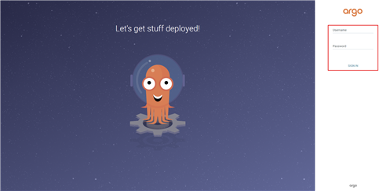

채점 유의사항
※ 다음 사항을 유의하여 채점하시오.
- AWS의 지역은 ap-northeast-2을 사용합니다.
- 웹페이지 접근은 크롬이나 파이어폭스를 이용합니다.
- 웹페이지에서 언어에 따라 문구가 다르게 보일 수 있습니다.
- shell에서의 명령어의 출력은 버전에 따라 조금 다를 수 있습니다.
- 문제지와 채점지에 있는 <> 는 변수입니다. 해당 부분을 변경해 입력합니다.
- 채점은 문항 순서대로 진행해야 합니다.
- 삭제된 채점자료는 되돌릴 수 없음으로 유의하여 진행하며, 이의신청까지 완료 이후 선수가 생성한 클라우드 리소스를 삭제합니다.
- 부분 점수가 있는 문항은 채점 항목에 부분 점수가 적혀져 있습니다.
- 부분 점수가 따로 없는 문항은 모두 맞아야 점수로 인정됩니다.
- 리소스의 정보를 읽어오는 채점항목은 기본적으로 스크립트 결과를 통해 채점을 진행하며, 만약 선수가 이의가 있다면 명령어를 직접 입력하여 확인해볼 수 있습니다.
- (예상 출력)은 바로 이전 (명령어 입력)의 예상 출력을 의미합니다.
- 채점 시에는 별도로 제공한 채점 스크립트(marking.sh)를 실행하여 채점할 수 있습니다.
다만, 선수가 직접 입력을 원할 경우 채점기준표에 명시된 명령어 그대로 입력하여 채점할 수 있습니다. - 배포된 채점 스크립트(marking.sh) 는 ec2-user에 최상위 경로에 위치 하도록 합니다.
- 모든 채점 사항은 gj2025-bastion에서 ssh 접속 후 진행합니다.
배점 요약
주요항목별 배점
| 번호 | 주요항목 | 배점 | 채점방법 | 채점시기 |
|---|---|---|---|---|
| 1 | Network Configuration | 1.5 | 합의 | 경기 종료후 |
| 2 | Transit Gateway | 1.5 | 합의 | 경기 종료후 |
| 3 | Application | 3.0 | 합의 | 경기 종료후 |
| 4 | Security | 2.75 | 합의 | 경기 종료후 |
| 5 | RDBMS | 2.0 | 합의 | 경기 종료후 |
| 6 | Container Registry | 0.25 | 합의 | 경기 종료후 |
| 7 | Container | 4.0 | 합의 | 경기 종료후 |
| 8 | Secret management | 2.0 | 합의 | 경기 종료후 |
| 9 | Logging | 3.0 | 합의 | 경기 종료후 |
| 10 | Load Balancing | 3.0 | 합의 | 경기 종료후 |
| 11 | Continuous Integration | 2.5 | 합의 | 경기 종료후 |
| 12 | Continuous Delivery | 4.5 | 합의 | 경기 종료후 |
| 합계 | 30 |
세부항목별 배점
| 번호 | 항목 | 배점 |
|---|---|---|
| 1-1 | Network Configuration · VPC | 0.5 |
| 1-2 | Network Configuration · Subnet | 0.5 |
| 1-3 | Network Configuration · Routing Table | 0.5 |
| 2-1 | Transit Gateway · Transit Gateway Configuration | 1.5 |
| 3-1 | Application · Red API Test | 1.5 |
| 3-2 | Application · Green API Test | 1.5 |
| 4-1 | Security · Network Firewall Subnet | 0.25 |
| 4-2 | Security · Network Firewall Configuration | 0.5 |
| 4-3 | Security · Network Firewall Policy | 0.5 |
| 4-4 | Security · Connection test - Deny | 1.5 |
| 5-1 | RDBMS · RDS Configuration | 1.0 |
| 5-2 | RDBMS · Proxy Configuration | 1.0 |
| 6-1 | Container Registry · ECR Configuration | 0.25 |
| 7-1 | Container · EKS Configuration | 0.5 |
| 7-2 | Container · NodeGroup Configuration | 0.5 |
| 7-3 | Container · Application Pods | 1.5 |
| 7-4 | Container · External Secrets | 1.5 |
| 8-1 | Secret managment · SecretsManager Configuration | 0.75 |
| 8-2 | Secret managment · SecretsManager Security | 1.25 |
| 9-1 | Logging · Red Application Logging Test | 1.5 |
| 9-2 | Logging · Green Application Logging Test | 1.5 |
| 10-1 | Load Balancing · External ELB Configuration | 1.5 |
| 10-2 | Load Balancing · Internal ELB Configuration | 1.5 |
| 11-1 | Continuous Integration · CodeBuild Project Configuration | 1.25 |
| 11-2 | Continuous Integration · CodePipeline Configuration | 1.25 |
| 12-1 | Continuous Delivery · ArgoCD Account Configuration | 0.5 |
| 12-2 | Continuous Delivery · Blue/Green Deployment | 1.0 |
| 12-3 | Continuous Delivery · Red CI/CD Test | 1.5 |
| 12-4 | Continuous Delivery · Green CI/CD Test | 1.5 |
| 총점 | 30 |
채점 항목
0. 사전준비
- gj2025-bastion 서버에 SSH를 통해 포트 2222로 접근합니다. (포트 2222 외의 모든 포트에 대한 접근은 제한되어 있습니다.)
- rm –rf ~/.aws를 진행합니다.
- aws configure를 입력하고 default.region을 ap-northeast-2으로 설정합니다.
위의 작업이 완료되면 “사전준비 완료! 채점 시작!” 이라는 문구가 출력됩니다.
1-1. VPC · 0.5점
채점 방법
aws ec2 describe-vpcs --filter Name=tag:Name,Values=gj2025-hub-vpc --query "Vpcs[0].CidrBlock" \
; aws ec2 describe-vpcs --filter Name=tag:Name,Values=gj2025-app-vpc --query "Vpcs[0].CidrBlock"
기대 결과
- 판정: 정확히 일치, 순서 중요
"10.0.0.0/16"
"192.168.0.0/16"
1-2. Subnet · 0.5점
채점 방법 (1-2-A)
aws ec2 describe-subnets --filter Name=tag:Name,Values=gj2025-hub-public-subnet-a --query "Subnets[0].CidrBlock" \
; aws ec2 describe-subnets --filter Name=tag:Name,Values=gj2025-hub-public-subnet-b --query "Subnets[0].CidrBlock" \
; aws ec2 describe-subnets --filter Name=tag:Name,Values=gj2025-hub-private-subnet-a --query "Subnets[0].CidrBlock" \
; aws ec2 describe-subnets --filter Name=tag:Name,Values=gj2025-hub-private-subnet-b --query "Subnets[0].CidrBlock" \
; aws ec2 describe-subnets --filter Name=tag:Name,Values=gj2025-hub-firewall-subnet --query "Subnets[0].CidrBlock"
기대 결과 (1-2-A)
- 판정: 정확히 일치, 순서 중요
"10.0.0.0/24"
"10.0.1.0/24"
"10.0.2.0/24"
"10.0.3.0/24"
"10.0.4.0/24"
채점 방법 (1-2-B)
aws ec2 describe-subnets --filter Name=tag:Name,Values=gj2025-app-private-subnet-a --query "Subnets[0].CidrBlock" \
; aws ec2 describe-subnets --filter Name=tag:Name,Values=gj2025-app-private-subnet-b --query "Subnets[0].CidrBlock" \
; aws ec2 describe-subnets --filter Name=tag:Name,Values=gj2025-app-data-subnet-a --query "Subnets[0].CidrBlock" \
; aws ec2 describe-subnets --filter Name=tag:Name,Values=gj2025-app-data-subnet-b --query "Subnets[0].CidrBlock"
기대 결과 (1-2-B)
- 판정: 정확히 일치, 순서 중요
"192.168.0.0/24"
"192.168.1.0/24"
"192.168.2.0/24"
"192.168.3.0/24"
1-3. Routing Table · 0.5점
채점 방법
aws ec2 describe-route-tables --filters "Name=tag:Name,Values=gj2025-hub-public-rtb" --query "RouteTables[].Routes[?GatewayId != null && starts_with(GatewayId, 'igw')].GatewayId" --output text \
; aws ec2 describe-route-tables --filters "Name=tag:Name,Values=gj2025-hub-firewall-rtb" --query "RouteTables[].Routes[?NatGatewayId != null].NatGatewayId" --output text \
; aws ec2 describe-route-tables --filters "Name=tag:Name,Values=gj2025-app-data-rtb-a" --query "RouteTables[].Associations[].SubnetId" --output text | xargs -I {} aws ec2 describe-subnets --subnet-ids {} --query "Subnets[].Tags[?Key=='Name'].Value" --output text \
; aws ec2 describe-route-tables --filters "Name=tag:Name,Values=gj2025-app-data-rtb-b" --query "RouteTables[].Associations[].SubnetId" --output text | xargs -I {} aws ec2 describe-subnets --subnet-ids {} --query "Subnets[].Tags[?Key=='Name'].Value" --output text
기대 결과
- 판정: 순서 중요
“igw-” 로 시작하는 문구가 출력이 되는지 확인
“nat-” 로 시작하는 문구가 출력이 되는지 확인
gj2025-app-data-subnet-a <- 정확히 일치
gj2025-app-data-subnet-b <- 정확히 일치
2-1. Transit Gateway Configuration · 1.5점
채점 방법
TGWS=$(aws ec2 describe-transit-gateways --query "TransitGateways[*].{Name:Tags[?Key=='Name'].Value|[0]}" --output json)
TGW_NAMES=$(echo $TGWS | jq -r '.[].Name')
for TGW_NAME in $TGW_NAMES; do
echo "$TGW_NAME"
TGW_ID=$(aws ec2 describe-transit-gateways --filters "Name=tag:Name,Values=$TGW_NAME" --query "TransitGateways[0].TransitGatewayId" --output text)
ATTACHMENTS=$(aws ec2 describe-transit-gateway-attachments --filters "Name=transit-gateway-id,Values=$TGW_ID" --query "TransitGatewayAttachments[*].{Name:Tags[?Key=='Name'].Value|[0]}" --output json)
ATTACHMENT_NAMES=$(echo $ATTACHMENTS | jq -r '.[].Name')
for ATTACHMENT_NAME in $ATTACHMENT_NAMES; do
echo "$ATTACHMENT_NAME"
done
done
기대 결과
gj2025-tgw <- 정확히 일치
gj2025-app-tgw-attach <- 정확히 일치, 순서 상관 없음
gj2025-hub-tgw-attach <- 정확히 일치, 순서 상관 없음
3-1. Red API Test · 1.5점
채점 방법
APP_EXTERNAL_NLB=$(aws elbv2 describe-load-balancers \
--names gj2025-app-external-nlb \
--query "LoadBalancers[].DNSName" \
--output text) && \
id_red=$(curl -s -H "Content-Type: application/json" -d '{"name":"kim"}' http://$APP_EXTERNAL_NLB/red | jq -r '.id') && \
curl -s http://$APP_EXTERNAL_NLB/red?id=$id_red
기대 결과
- 판정: 정확히 일치
{"name":"kim","version":"1.0.0"}
3-2. Green API Test · 1.5점
채점 방법
APP_EXTERNAL_NLB=$(aws elbv2 describe-load-balancers \
--names gj2025-app-external-nlb \
--query "LoadBalancers[].DNSName" \
--output text) && \
id_green=$(curl -s -H "Content-Type: application/json" -d '{"x":"abcd","y":21}' http://$APP_EXTERNAL_NLB/green | jq -r '.id') && \
curl -s http://$APP_EXTERNAL_NLB/green?id=$id_green
기대 결과
- 판정: 정확히 일치
{"version":"1.0.0","x":"abcd","y":21}
4-1. Network Firewall Subnet · 0.25점
채점 방법
firewall_info=$(aws network-firewall describe-firewall --firewall-name gj2025-firewall)
echo "$firewall_info" | jq -r '.Firewall.SubnetMappings[] | "ID: \(.SubnetId)"' | while read -r subnet_info; do
subnet_id=$(echo "$subnet_info" | awk '{print $2}')
subnet_name=$(aws ec2 describe-subnets \
--subnet-ids "$subnet_id" \
--query 'Subnets[*].Tags[?Key==`Name`].Value' \
--output text)
echo "$subnet_name"
done
기대 결과
- 판정: 정확히 일치
gj2025-hub-firewall-subnet
4-2. Network Firewall Configuration · 0.5점
채점 방법
aws network-firewall describe-firewall --firewall-name gj2025-firewall --query "FirewallStatus.Status" --output text
aws network-firewall describe-logging-configuration \
--firewall-name gj2025-firewall \
--query 'LoggingConfiguration.LogDestinationConfigs' \
--output json | jq -r '.[] | "\(.LogType)\n\(.LogDestinationType)\n\(.LogDestination.logGroup)\n"'
기대 결과
- 판정: 정확히 일치
READY
FLOW
CloudWatchLogs
/gj2025/firewall
4-3. Network Firewall Policy · 0.5점
채점 방법
aws network-firewall describe-firewall-policy --firewall-policy-name gj2025-firewall-policy --query 'FirewallPolicyResponse.{FirewallPolicyName: FirewallPolicyName}' --output text
arn=$(aws network-firewall list-rule-groups --query "RuleGroups[?contains(Name, 'gj2025-firewall-rule')].Arn" --output text)
aws network-firewall describe-rule-group --rule-group-arn $arn --query 'RuleGroup.RulesSource.RulesString' --output text | grep -q . && echo "Suricata"
기대 결과
- 판정: 정확히 일치
gj2025-firewall-policy
Suricata
4-4. Connection test - Deny · 1.5점
채점 방법
kubectl run firewall-test --image=radial/busyboxplus --restart=Never --command -- sh -c "while true;
do sleep 3600; done" > /dev/null 2>&1
sleep 3
aws ec2 describe-subnets --subnet-ids $(aws ec2 describe-instances \
--instance-ids $(kubectl get node $(kubectl get pod firewall-test -n default -o jsonpath='{.spec.nodeName}') \
-o jsonpath='{.spec.providerID}' | awk -F'/' '{print $5}') \
--query 'Reservations[0].Instances[0].SubnetId' --output text) --query "Subnets[0].Tags[?Key=='Name'].Value" --output text
kubectl exec firewall-test -- curl -m 5 -sS https://ifconfig.io
기대 결과
gj2025-app-private-subnet- <- 로 시작하는 문구가 출력되는지 확인
curl: (28) Operation timed out after 0 milliseconds with 0 out of 0 bytes received <- 정확히 일치
command terminated with exit code 28 <- 정확히 일치
5-1. RDS Configuration · 1.0점
채점 방법
aws rds describe-db-instances \
--query "DBInstances[*].[DBInstanceIdentifier, DBInstanceClass, MasterUsername, Endpoint.Port, Engine, EngineVersion, join(',', EnabledCloudwatchLogsExports)]" \
--output text | tr '\t' '\n'
for id in $(aws rds describe-db-instances --query "DBInstances[*].DBSubnetGroup.Subnets[*].SubnetIdentifier" --output text); do
aws ec2 describe-subnets --subnet-ids "$id" --query "Subnets[0].Tags[?Key=='Name'].Value | [0]" --output text
done
기대 결과
gj2025-db-instance <- 정확히 일치
db.t3.medium <- 정확히 일치
admin <- 정확히 일치
3309 <- 정확히 일치
mysql <- 정확히 일치
8.0. <- 로 시작하는 문구가 출력되는지 확인
audit,error,general <- 정확히 일치
gj2025-app-data-subnet-a <- 정확히 일치, 순서 상관 없음
gj2025-app-data-subnet-b <- 정확히 일치, 순서 상관 없음
5-2. Proxy Configuration · 1.0점
채점 방법
kubectl run proxy-test --image=mysql:8 --restart=Never -- sleep 60 &>/dev/null
sleep 30
ENDPOINT=$(aws rds describe-db-proxies --db-proxy-name gj2025-rds-proxy --query 'DBProxies[0].Endpoint' --output text)
SUBNET_ID=$(aws ec2 describe-instances --instance-ids $(kubectl get node $(kubectl get pod proxy-test -o jsonpath='{.spec.nodeName}') -o jsonpath='{.spec.providerID}' | cut -d'/' -f5) --query 'Reservations[0].Instances[0].SubnetId' --output text)
aws ec2 describe-subnets --subnet-ids $SUBNET_ID --query 'Subnets[0].Tags[?Key==`Name`].Value' --output text
kubectl exec proxy-test -- mysql -h $ENDPOINT -u admin -pSkills53#\$% -e 'SELECT 1' &>/dev/null && echo True || echo False
기대 결과
gj2025-app-private-subnet- <- 로 시작하는 문구가 출력되는지 확인
True <- 정확히 일치
6-1. ECR Configuration · 0.25점
채점 방법
aws ecr describe-repositories \
--output json \
| jq -r '.repositories[] | "\(.repositoryName)\n\(.encryptionConfiguration.encryptionType)"'
기대 결과
green <- 정확히 일치, 순서 상관 없음
KMS <- 정확히 일치
red <- 정확히 일치, 순서 상관 없음
KMS <- 정확히 일치
7-1. EKS Configuration · 0.5점
채점 방법
aws eks describe-cluster \
--name gj2025-eks-cluster \
--query 'cluster.[version, logging.clusterLogging[*].types]' \
--output text | awk 'NR==1{print $0; next} {gsub(/\t/, "\n"); print}'
기대 결과
- 판정: 정확히 일치
1.32
api
audit
authenticator
controllerManager
scheduler
7-2. NodeGroup Configuration · 0.5점
채점 방법
aws eks describe-nodegroup --cluster-name gj2025-eks-cluster --nodegroup-name gj2025-eks-addon-nodegroup --query 'nodegroup.{NodeGroupName:nodegroupName, Status:status, DesiredSize:scalingConfig.desiredSize, InstanceTypes:instanceTypes}' --output json \
; aws eks describe-nodegroup --cluster-name gj2025-eks-cluster --nodegroup-name gj2025-eks-app-nodegroup --query 'nodegroup.{NodeGroupName:nodegroupName, Status:status, DesiredSize:scalingConfig.desiredSize, InstanceTypes:instanceTypes}' --output json \
; aws ec2 describe-instances --instance-ids $(aws autoscaling describe-auto-scaling-groups --auto-scaling-group-names $(aws eks describe-nodegroup --cluster-name gj2025-eks-cluster --nodegroup-name gj2025-eks-addon-nodegroup --query 'nodegroup.resources.autoScalingGroups[0].name' --output text) --query 'AutoScalingGroups[0].Instances[].InstanceId' --output text) --query 'Reservations[].Instances[].Tags[?Key==`Name`].Value | []' --output text \
; aws ec2 describe-instances --instance-ids $(aws autoscaling describe-auto-scaling-groups --auto-scaling-group-names $(aws eks describe-nodegroup --cluster-name gj2025-eks-cluster --nodegroup-name gj2025-eks-app-nodegroup --query 'nodegroup.resources.autoScalingGroups[0].name' --output text) --query 'AutoScalingGroups[0].Instances[].InstanceId' --output text) --query 'Reservations[].Instances[].Tags[?Key==`Name`].Value | []' --output text
기대 결과
- 판정: 정확히 일치
{ "NodeGroupName": "gj2025-eks-addon-nodegroup",
"Status": "ACTIVE",
"DesiredSize": 2,
"InstanceTypes": [
"t3.medium"
],
}{ "NodeGroupName": "gj2025-eks-app-nodegroup",
"Status": "ACTIVE",
"DesiredSize": 2,
"InstanceTypes": [
"t3.medium"
],
}
gj2025-eks-addon-node gj2025-eks-addon-node
gj2025-eks-app-node gj2025-eks-app-node
7-3. Application Pods · 1.5점
채점 방법
kubectl get rollout red-rollout \
-n skills \
| awk 'NR==2 {print $1; if ($2 == $3 && $2 > 0) print "True"; else print "False"}'
kubectl get rollout green-rollout \
-n skills \
| awk 'NR==2 {print $1; if ($2 == $3 && $2 > 0) print "True"; else print "False"}'
기대 결과
- 판정: 정확히 일치
red-rollout
True
green-rollout
True
7-4. External Secrets · 1.5점
채점 방법
kubectl get externalsecret db-secret -n skills | awk 'NR==2 {print $(NF-1) "\n" $NF}'
기대 결과
- 판정: 정확히 일치
SecretSynced
True
8-1. SecretsManager Configuration · 0.75점
채점 방법
aws secretsmanager describe-secret --secret-id gj2025-eks-cluster-catalog-secret --region ap-northeast-2 --query "Name" --output text
aws secretsmanager describe-secret --secret-id gj2025-github-token --region ap-northeast-2 --query "Name" --output text
기대 결과
- 판정: 정확히 일치
gj2025-eks-cluster-catalog-secret
gj2025-github-token
8-2. SecretsManager Security · 1.25점
채점 방법
for arn in $(aws iam list-attached-role-policies --role-name $(kubectl get sa $(kubectl get secretstore $(kubectl get externalsecret db-secret -n skills -o jsonpath="{.spec.secretStoreRef.name}") -n skills -o jsonpath="{.spec.provider.aws.auth.jwt.serviceAccountRef.name}") -n skills -o jsonpath="{.metadata.annotations.eks\.amazonaws\.com/role-arn}" | awk -F '/' '{print $2}') --query 'AttachedPolicies[*].PolicyArn' --output text); do aws iam get-policy-version --policy-arn $arn --version-id $(aws iam get-policy --policy-arn $arn --query 'Policy.DefaultVersionId' --output text) --query 'PolicyVersion.Document.Statement[*].Resource' --output text; done | tr '\t' '\n'
기대 결과
- 판정: 개수 상관없음
arn:aws:secretsmanager:ap-northeast-2:123423453456:secret:gj2025-eks-cluster-catalog-secret-31Q2ZH
arn:aws:secretsmanager:ap-northeast-2:123423453456:secret:gj2025-eks-cluster-catalog-secret-31Q2ZH
- 밑줄친 부분은 다를수도 있음
9-1. Red Application Logging Test · 1.5점
채점 방법
kubectl get daemonset red-fluent-bit -n amazon-cloudwatch -o yaml > red-fluent-bit.yaml
kubectl delete daemonset red-fluent-bit -n amazon-cloudwatch > /dev/null 2>&1
date
aws logs delete-log-group --log-group-name /gj2025/app/red > /dev/null 2>&1
kubectl apply -f red-fluent-bit.yaml > /dev/null 2>&1
sleep 3
EXTERNAL_NLB=$(aws elbv2 describe-load-balancers \
--names gj2025-app-external-nlb \
--query "LoadBalancers[0].DNSName" \
--output text)
curl -s -X POST -H "Content-Type: application/json" -d '{"name":"kim"}' http://$EXTERNAL_NLB/red > /dev/null 2>&1
sleep 3
aws logs get-log-events \
--log-group-name /gj2025/app/red \
--log-stream-name app-red-logs \
--limit 1 \
--query 'events[*].message' \
--output json | jq -r '.[0] | fromjson | .log'
기대 결과
Thu Jun 19 08:20:09 UTC 2025
2025-06-19T08:20:15.159611389Z stderr F 2025/06/19 08:20:15 [2025-06-19T08:20:15Z] POST /red from 192.168.0.99:19176
- 밑줄친 부분의 경우 정확히 일치해야 한다.
- date 명령에 출력된 시간 이후의 로그가 10초 내로 기록되었는지 확인
9-2. Green Application Logging Test · 1.5점
채점 방법
kubectl get daemonset green-fluent-bit -n amazon-cloudwatch -o yaml > green-fluent-bit.yaml
kubectl delete daemonset green-fluent-bit -n amazon-cloudwatch > /dev/null 2>&1
date
aws logs delete-log-group --log-group-name /gj2025/app/green > /dev/null 2>&1
kubectl apply -f green-fluent-bit.yaml > /dev/null 2>&1
sleep 3
EXTERNAL_NLB=$(aws elbv2 describe-load-balancers \
--names gj2025-app-external-nlb \
--query "LoadBalancers[0].DNSName" \
--output text)
curl -s -X POST -H "Content-Type: application/json" -d '{"x":"abcd","y":21}' http://$EXTERNAL_NLB/green > /dev/null 2>&1
sleep 3
aws logs get-log-events \
--log-group-name /gj2025/app/green \
--log-stream-name app-green-logs \
--limit 1 \
--query 'events[*].message' \
--output json | jq -r '.[0] | fromjson | .log'
기대 결과
Thu Jun 19 08:23:27 UTC 2025
2025-06-19T08:23:32.684988646Z stderr F 2025/06/19 08:23:32 [2025-06-19T08:23:32Z] POST /green from 192.168.1.121:25986
- 밑줄친 부분의 경우 정확히 일치해야 한다.
- date 명령에 출력된 시간 이후의 로그가 10초 내로 기록되었는지 확인
10-1. External ELB Configuration · 1.5점
채점 방법
aws elbv2 describe-load-balancers --names gj2025-app-external-nlb \
--query 'LoadBalancers[0].Scheme' --output text && \
aws ec2 describe-tags \
--filters "Name=resource-id,Values=$(aws elbv2 describe-load-balancers --names gj2025-app-external-nlb --query 'LoadBalancers[0].VpcId' --output text)" \
--query "Tags[?Key=='Name'].Value | [0]" --output text
aws elbv2 describe-load-balancers --names gj2025-argo-external-nlb \
--query 'LoadBalancers[0].Scheme' --output text && \
aws ec2 describe-tags \
--filters "Name=resource-id,Values=$(aws elbv2 describe-load-balancers --names gj2025-argo-external-nlb --query 'LoadBalancers[0].VpcId' --output text)" \
--query "Tags[?Key=='Name'].Value | [0]" --output text
기대 결과
- 판정: 정확히 일치
internet-facing
gj2025-hub-vpc
internet-facing
gj2025-hub-vpc
10-2. Internal ELB Configuration · 1.5점
채점 방법
aws elbv2 describe-load-balancers --names gj2025-app-internal-nlb \
--query 'LoadBalancers[0].Scheme' --output text && \
aws ec2 describe-tags \
--filters "Name=resource-id,Values=$(aws elbv2 describe-load-balancers --names gj2025-app-internal-nlb --query 'LoadBalancers[0].VpcId' --output text)" \
--query "Tags[?Key=='Name'].Value | [0]" --output text
aws elbv2 describe-load-balancers --names gj2025-argo-internal-nlb \
--query 'LoadBalancers[0].Scheme' --output text && \
aws ec2 describe-tags \
--filters "Name=resource-id,Values=$(aws elbv2 describe-load-balancers --names gj2025-argo-internal-nlb --query 'LoadBalancers[0].VpcId' --output text)" \
--query "Tags[?Key=='Name'].Value | [0]" --output text
aws elbv2 describe-load-balancers --names gj2025-app-alb \
--query 'LoadBalancers[0].Scheme' --output text && \
aws ec2 describe-tags \
--filters "Name=resource-id,Values=$(aws elbv2 describe-load-balancers --names gj2025-app-alb --query 'LoadBalancers[0].VpcId' --output text)" \
--query "Tags[?Key=='Name'].Value | [0]" --output text
기대 결과
- 판정: 정확히 일치
internal
gj2025-app-vpc
internal
gj2025-app-vpc
internal
gj2025-app-vpc
11-1. CodeBuild Project Configuration · 1.25점
채점 방법
aws codebuild batch-get-projects --names gj2025-app-red-build --query "projects[0].[ \
source.type, \
source.location, \
source.auth.type, \
environment.environmentVariables[].type, \
logsConfig.cloudWatchLogs.groupName]" --output text | xargs -n1
aws codebuild batch-get-projects --names gj2025-app-green-build --query "projects[0].[ \
source.type, \
source.location, \
source.auth.type, \
environment.environmentVariables[].type, \
logsConfig.cloudWatchLogs.groupName]" --output text | xargs -n1
기대 결과
GITHUB
https://github.com/cloud53/gj2025-repository.git
SECRETS_MANAGER
/gj2025/build/red
SECRETS_MANAGER
GITHUB
https://github.com/cloud53/gj2025-repository.git
SECRETS_MANAGER
/gj2025/build/green
SECRETS_MANAGER
- 밑줄친 부분은 다를수도 있음
11-2. CodePipeline Configuration · 1.25점
채점 방법
aws codepipeline get-pipeline \
--name gj2025-app-red-pipeline \
--query 'pipeline.[stages[?name==`Source`].actions[0].[actionTypeId.provider, configuration.[OAuthToken != null, Repo]], stages[?name==`Build`].actions[0].configuration.ProjectName]' \
--output text | tr '\t' '\n'\
; aws codepipeline get-pipeline \
--name gj2025-app-green-pipeline \
--query 'pipeline.[stages[?name==`Source`].actions[0].[actionTypeId.provider, configuration.[OAuthToken != null, Repo]], stages[?name==`Build`].actions[0].configuration.ProjectName]' \
--output text | tr '\t' '\n'
기대 결과
- 판정: 정확히 일치
GitHub
True
gj2025-repository
gj2025-app-red-build
GitHub
True
gj2025-repository
gj2025-app-green-build
12-1. ArgoCD Account Configuration · 0.5점
채점 방법 — 명령어 입력 후 작업 수행
aws elbv2 describe-load-balancers \
--names gj2025-argo-external-nlb \
--query "LoadBalancers[0].DNSName" \
--output text
- 위 명령어를 통해 응답받은 주소로 웹 브라우저에서 접근
| 항목 | 값 |
|---|---|
| Username | admin |
| Password | Skills53 |
- 위 Username과 Password로 로그인이 가능해야 합니다.
기대 결과

- 위 화면에서 로그인을 진행해야 합니다.

- 로그인 완료 후 위와 같이 대시보드에 접속한 화면이 확인되어야 합니다.
12-2. Blue/Green Deployment · 1.0점
채점 방법 — 명령어 실행
kubectl argo rollouts get rollout red-rollout -n skills | egrep "Strategy" \
; kubectl argo rollouts get rollout red-rollout -n skills | egrep "stable" | grep "Healthy" | awk {'print $6,$8'}
kubectl argo rollouts get rollout green-rollout -n skills | egrep "Strategy" \
; kubectl argo rollouts get rollout green-rollout -n skills | egrep "stable" | grep "Healthy" | awk {'print $6,$8'}
기대 결과
- 판정: 정확히 일치
Strategy: BlueGreen
Healthy stable,active
Strategy: BlueGreen
Healthy stable,active
12-3. Red CI/CD Test · 1.5점
채점 방법 — 명령어 실행
cd /home/ec2-user/gj2025-repository
git checkout app-red
- /home/ec2-user/gj2025-repository 경로에 red_1.0.1 바이너리를 불러옵니다.
- /home/ec2-user/gj2025-repository 경로에 red_1.0.1 바이너리를 제외한 다른 애플리케이션 바이너리가 존재하면 안됩니다.
sudo mv red_1.0.1 red
ls
git add red > /dev/null 2>&1
git commit -m "red app cicd test" > /dev/null 2>&1
git push origin app-red > /dev/null 2>&1
sleep 180
EXTERNAL_NLB=$(aws elbv2 describe-load-balancers \
--names gj2025-app-external-nlb \
--query "LoadBalancers[0].DNSName" \
--output text)
id=$(curl -s -X POST -H "Content-Type: application/json" -d '{"name":"kim"}' http://$EXTERNAL_NLB/red | jq -r '.id')
curl -X GET "http://$EXTERNAL_NLB/red?id=$id"
기대 결과
Dockerfile buildspec.yaml red <- 정확히 일치, 순서 상관 없음
{"name":"kim","version":"1.0.1"} <- 정확히 일치
12-4. Green CI/CD Test · 1.5점
채점 방법 — 명령어 실행
cd /home/ec2-user/gj2025-repository
git checkout app-green
- /home/ec2-user/gj2025-repository 경로에 green_1.0.1 바이너리를 불러옵니다.
- /home/ec2-user/gj2025-repository 경로에 green_1.0.1 바이너리를 제외한 다른 red 애플리케이션 바이너리가 존재하면 안됩니다.
sudo mv green_1.0.1 green
ls
git add green > /dev/null 2>&1
git commit -m "green app cicd test" > /dev/null 2>&1
git push origin app-green > /dev/null 2>&1
sleep 180
EXTERNAL_NLB=$(aws elbv2 describe-load-balancers \
--names gj2025-app-external-nlb \
--query "LoadBalancers[0].DNSName" \
--output text)
id=$(curl -s -X POST -H "Content-Type: application/json" -d '{"x":"abcd","y":21}' http://$EXTERNAL_NLB/green | jq -r '.id')
curl -X GET "http://$EXTERNAL_NLB/green?id=$id"
기대 결과
Dockerfile buildspec.yaml green <- 정확히 일치, 순서 상관 없음
{"version":"1.0.1","x":"abcd","y":21} <- 정확히 일치